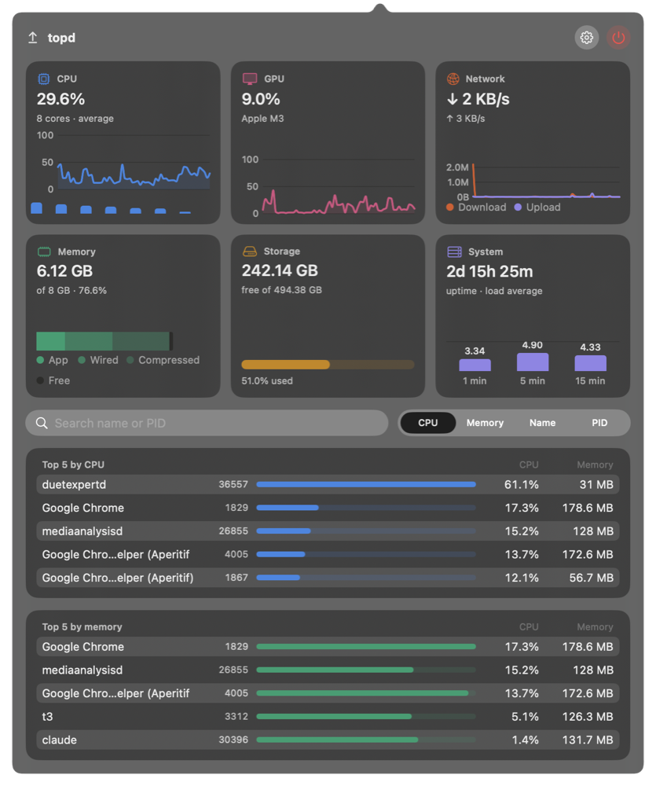

htop for macOS,
without opening a window.
topd lives in your menu bar. Live CPU, memory, GPU, storage, system, and network, plus the processes using the most CPU and memory. One click away, and nothing leaves your Mac.

Everything your Mac is doing, one click away
Six cards, two process lists, and a menu bar that can show the numbers you care about.
Six live cards
CPU with per-core bars, memory broken into app, wired, compressed and free, GPU on Apple Silicon, storage, uptime and load, and network history.
Top processes
The five processes using the most CPU, and the five using the most memory. Search by name or PID, and sort.
At a glance
Show the values of one to three cards in the menu bar, in place of the icon. The item sizes itself to what you show.
Reorder and choose
Drag cards into the order you like. Turn each card and process list on or off. The popover sizes itself to what is on.
Twelve themes
Default glass, System (follows macOS light and dark, with your choice of themes), Dracula, Nord, One Dark, GitHub Light, Ayu Light, Gruvbox Light, and four fun ones.
Light on the Mac
About 0.1 percent CPU when the popover is closed. It samples once a second only while open. No Dock icon, no window.
Install in a minute
topd builds on your Mac from source. You need macOS 14 or later and the Xcode Command Line Tools.
xcode-select --install # once, if you do not have the tools
git clone https://github.com/arshalsoren/topd.git
cd topd
./run.sh- The first build takes a few minutes. Then the topd icon appears in your menu bar.
- Right-click the icon for Preferences, where you pick the icon, the theme, and the cards.
- Optional: turn on Launch at login in Preferences, General.
Your menu bar, your colors
Each theme changes the app's chrome. Charts keep one fixed, contrast-checked palette, so the numbers read the same everywhere.
Private by design
topd is meant to be a tool you can trust with a view of your machine.
No network access
The app makes no network connections. Nothing is uploaded, and nothing is downloaded.
No telemetry
No analytics, no crash reporting, no accounts. Preferences stay in your user defaults on your Mac.
Read-only
topd reads statistics that macOS already shows your user. It stops, changes, and signals nothing.
Open source
MIT licensed. Read the code, build it yourself, and send changes through a pull request.
Support topd
topd is free and always will be. If it saves you time, you can chip in. Thank you.
Questions
Short answers. More detail is in the wiki.
Why build from source instead of downloading an app?
An app built on your Mac runs without the download and signing steps that unsigned downloads need. It also means you can read what you run. A packaged download and Homebrew install are not offered yet.
Which Macs does it support?
macOS 14 (Sonoma) or later. If the GPU value is not available on a Mac, the GPU card says so and the other cards still work.
Does it need an internet connection?
No. topd never connects to the network.
How do I turn it off or remove it?
Quit it from the power button in the popover, or run pkill -x topd. Turn off Launch at login first if you turned it on. Then delete the cloned folder.
How do I get updates?
Pull the repository and run ./run.sh again. Watch the repository on GitHub to hear about new releases.
Can I contribute?
Yes. Read CONTRIBUTING.md. Changes come in through pull requests, and questions go to the Discussions tab.